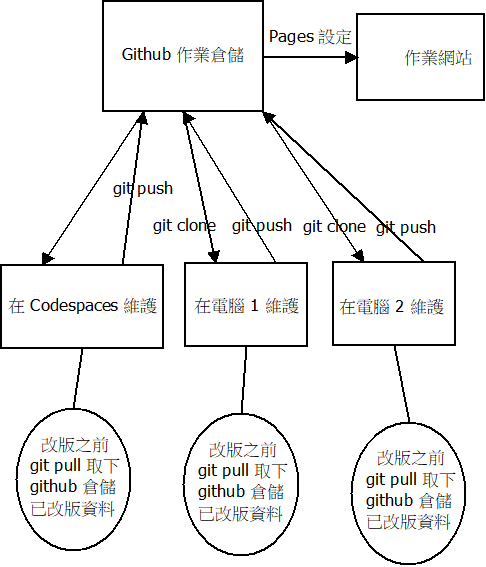
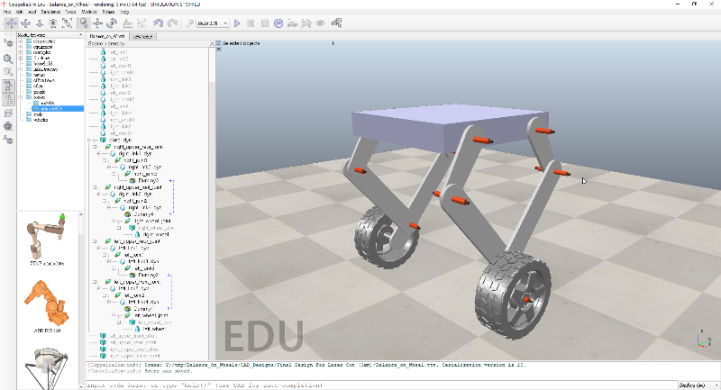

Project <<
Previous Next >> Topic 1
Topics
HW Template:
https://github.com/mdecad2024/hw-mdecycu
https://mdecad2024.github.io/hw-mdecycu
Topic 1: 基於瀏覽器的分散式版次管理與整合程式開發環境 (複習)

github_multi_site_version_control_dia.7z
USB 隨身碟:
下載 python_2025_lite.7z (428 MB, 解開壓縮後約 1.5 GB)
下載 NX2312 可攜 CAD 壓縮檔案 (1.85 GB, 解開後約 9 GB)
nx2312_Drafting.7z
nx2312_nxplot.7z
What are Github and Codespace?
以下兩個影片說明如何利用 Codespaces 維護個人的作業倉儲:
Codespaces 維護作業倉儲教學片一:
Codespaces 維護作業倉儲教學影片二:
以下兩個影片說明如何利用可攜程式環境在近端電腦維護作業倉儲內容:
Localhost 維護作業倉儲教學影片一:
Localhost 維護作業倉儲教學影片二:
Hello World - GitHub Docs
利用包含學號的字串作為帳號, 申請免費使用 Github.
Topic 2: 計算機程式課程作業與學員網頁 (複習)
What is Github Classroom?
GitHub Classroom
2020.04 轉為封閉源之前的 Github Classroom 原始碼
Your repository and Web site
Topic 3: 利用 CAD 套件建立零組件 (零件, 組立件)
利用 Solvespace 建立機械系統的零組件
Solvespace Tutorial
Document (link)
2D Sketch, constraints, assembly
mini Tutorial
Learning Guide
Drawing Tutorial
如何從 Solvespace 繪製零件轉入 CoppeliaSim:
利用 Solvespace 進行單一輸入的平面機構模擬
利用 Siemens NX 建立機械系統的零組件 (NX CAD Buyer's Guide, 2024 Siemens 推出 NX X, Fact Sheet, Why?)
“NX X enables our customers to move to a cloud-based, collaborative engineering environment. Our solution allows them to retain their intellectual property and continue their innovative work, without disruption; no need to reinvent their working practices,” said Bob Haubrock, senior vice president, Product Engineering Software, Siemens Digital Industries Software.
https://www.swooshtech.com/2023/01/05/nx-x-a-cloud-based-3d-cad-saas-solution/
NX Tutorial
cd2023_pj3ag4_zmq_football_4.7.7z
cd2024_2b_g6_steel_ball_platform_nxopen_copsim.7z
Homework 1 (10%):
利用 Solvespace 與 NX2312 建立 Parts 頁面中的零件
其他零件模擬練習
Homework 2 (10%):
利用 Solvespace 與 NX2312 建立 Balance on Wheels 組立件
Topic 4: 機電整合系統模擬與控制
利用 CoppeliaSim 建立機電模擬系統
利用 Python 跨網路控制瀏覽器上的機電模擬系統
Homework 3 (20%):
建立 Balance on Wheels 控制系統設計模擬場景
https://github.com/mdecycu/Balance_On_Wheels


Balance_on_wheels_nx2312.7z
Balance_on_Wheel_scene.7z
cd2023_pj3ag4_zmq_football_4.7.7z
2019_Control_and_balancing_of_a_small_vehicle_with_two_wheels_for_autonomous_driving.pdf (source)
其他參考資料
Homework 4 (20%):
建立 Dingo 機器狗控制系統設計模擬場景
https://github.com/mdecycu/DingoQuadruped
DINGO_QUADRUPED_CAD.7z

Project <<
Previous Next >> Topic 1